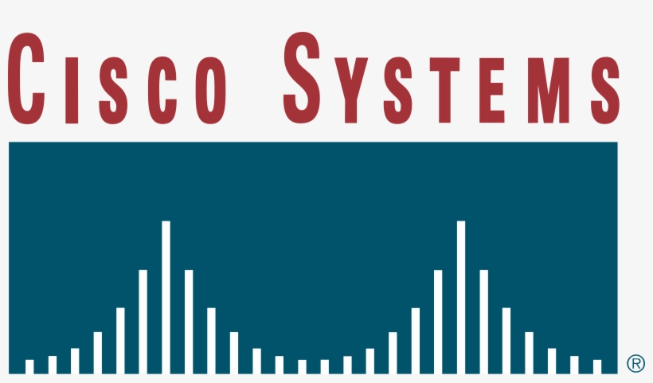
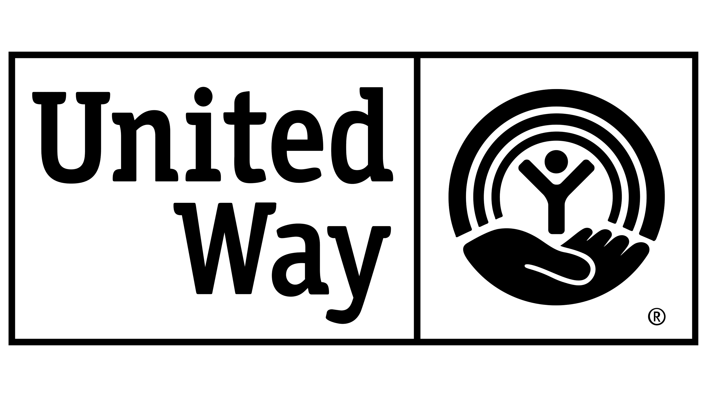
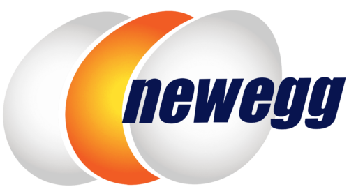

Trusted By






Transform your organization through expert people management, strategic leadership development, and proven organizational excellence frameworks.
Schedule Consultation
A proven four-step process that transforms leadership and drives organizational excellence
Understanding your organization's current state, challenges, and goals while ensuring alignment with core mission and values.
Customizing assessment tools, development plans, and training methodologies specific to your organization's needs.
Delivering workshops, one-on-one coaching, and ongoing support that develops effective people management skills.
Tracking progress, building lasting organizational capabilities, and ensuring sustainable performance improvements.
Core to the success of any organization is people. Larry's approach recognizes that the totality of life—family, faith, home, health, dreams—impacts professional aspirations and performance.
Comprehensive leadership consulting designed for non-profits and public sector organizations
Real-world examples of organizational transformation and leadership development success
Using commercial and proprietary assessment tools combined with extensive experience, Larry has provided transformational coaching to scores of professionals across media, non-profit and tech sectors.
When executive teams lose focus and fall into "me vs. we" behaviors, Larry works with organizations to identify stress points and provide coaching that gets people refocused on core mission.
Larry has developed and delivered management workshops to hundreds of professionals on essential leadership topics including core management skills, personnel management, and delivering effective feedback.
From chambers of commerce to magazines and non-profit organizations, Larry has led strategic planning processes that create clear roadmaps for organizational success and growth.
Hear from executives who have transformed their organizations with Larry's guidance
"Larry is an exceptional leader who is able to help teams navigate through both small-scale and large-scale change better than anyone I have met. He has an incredibly unique talent for developing individuals at all levels through coaching, allowing them to grow and accomplish professional milestones beyond what they ever thought possible. I would highly recommend Mr. Olmstead to any organization looking to grow and perform better."
"Few people I know have the deep integrity and commitment to do what's right than Larry. In so many ways, he's fearless; and yet, he brings to his work a level of compassion and empathy that is unmatched. These are hard attributes to find in this world. Not only does he have them, he also brings a depth of experience, national award-winning efforts, and genuine success at all levels."
"For over six years I have had the privilege to learn from and work alongside Larry Olmstead. His expertise in organizational leadership and ability to inspire meaningful, lasting change is unmatched. Larry's strategic insight and people-centered approach consistently elevate teams, foster resilience, and drive measurable impact."
"I endorse Larry Olmstead based on his involvement as a leader, listener, activist, and much more. Larry has been an asset to our community by sharing his Gifts of the Head, Heart, and Hand. We appreciate Larry's endorsement of The Shasta Beloved Community Values: Solidarity. Unity. Respect. Equality."
"The breadth of Larry's professional experience and expertise, along with his strong communication and facilitation skills, allow him to quickly add value to organizations in the midst of change or disruption. Human resource challenges, and the culture that often surrounds them, can often benefit from an external perspective. Larry has amazing radar, allowing him to quickly understand organization dynamics and come up with solutions that enhance organizational strength and effectiveness."
Ready to transform your organization's leadership? Let's discuss your specific challenges and goals.
Whether you're facing leadership challenges, planning organizational change, or looking to develop your management team, Larry brings decades of proven experience to help you succeed.
Every engagement begins with understanding your unique situation, goals, and organizational culture. From there, we develop a customized approach that delivers measurable results.
Email: larry@leadwithlarry.com
Location: Redding, CA